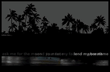

ASK ME FOR THE MOON John Zuern is an Associate Professor in the Department of English at the University of Hawai'i at Manoa, where he teaches classes in literary theory, rhetoric, and electronic media. Before joining the English faculty in 1997, he worked as a part-time lecturer in the Graphic Design program in the UH-Manoa Department of Art and as a waiter in a number of Waikiki hotels.  Click to enter |